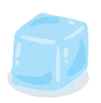
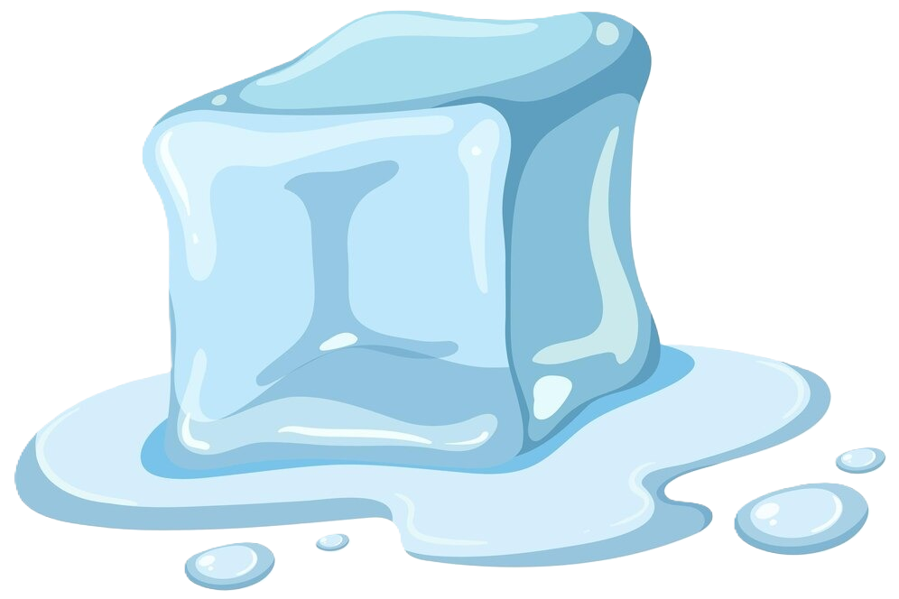

Untuk mengetahui apa itu transformasi, perhatikan es batu di bawah ini yang
bertransformasi menjadi air.
(Tekan tombol play untuk melihat animasi)



Kenapa es batu tersebut dikatakan bertransformasi menjadi air? Menurut kamu apa itu
transformasi? Pilih sampai jawabanmu hingga benar